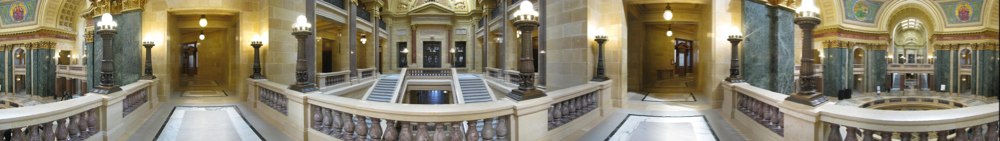
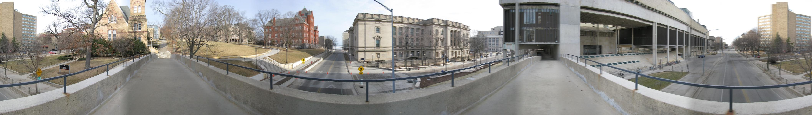
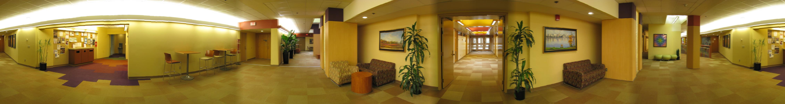
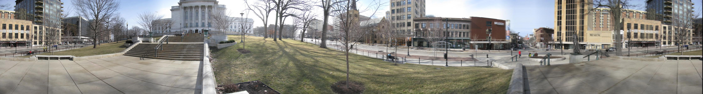
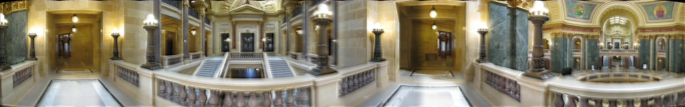

Assignment 2: Panoramic Mosaic Stitching
Akshay Sood(
sood@cs.wisc.edu
), Meenakshi Syamkumar (
ms@cs.wisc.edu
)
Table of contents
Goal
Image acquisition
Panorama implementation
Bells and Whistles
Our Panorama
Interactive Panorama
Git logs and credits
References
Our Panorama
Feather Blending without exposure correction




Pyramid Blending without exposure correction
